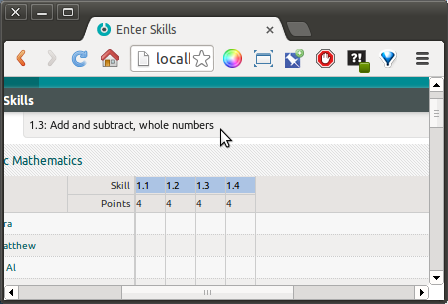
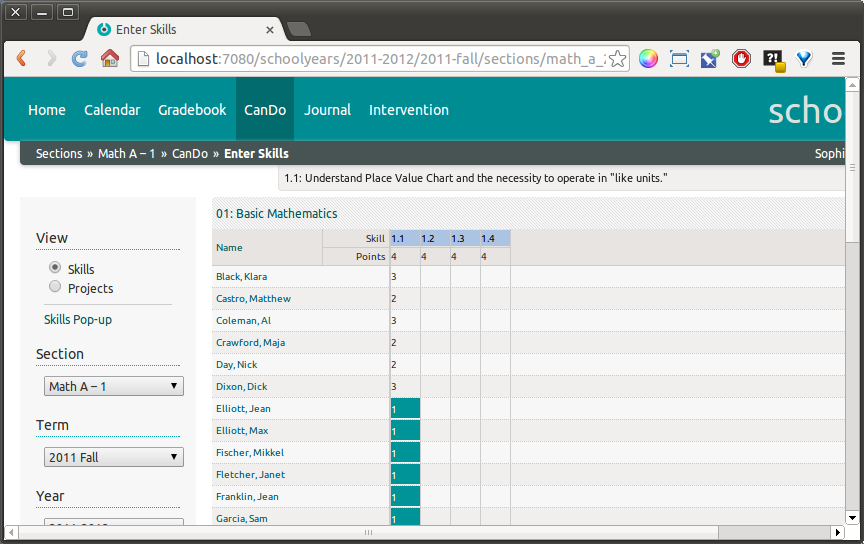

Entering Scores in CanDo¶
For a teacher, the process of entering scores in the CanDo gradebook should be straightforward, particularly for those familiar with SchoolTool’s Gradebook and Attendance. See SchoolTool’s Gradebooks for basic navigation tips.
Here is a basic CanDo gradebook view for a teacher:
There are two modes for organizing Skills, by Skill Set and by Project. We will cover Projects later. You can switch between modes using the buttons under View at the top of the left sidebar.
The Skills Pop-up link presents a movable reference to the full titles of Skill in Skill Sets assigned to this section:
You can also view the title and description of any Skill by moving the mouse over the Skill column header. The title and discription will appear in the gray bar hanging between the dark gray header bar and the top of the gradebook:

Navigation between Skill Sets is done by clicking on the navigation area in the top row of the gradebook, which acts like a large drop-down menu:
To enter scores, click on a cell, type in the number. If the score is valid, it will show up as green, if not, red.
You must click the **Save* button at bottom to save your scores.* If you see cells with colored backgrounds, they are not saved.
Saved scores:
Note that the system will save invalid scores, but not include them in calculations.
Left-clicking on the column headers brings up a menu, with the Skill title at top:
Score this presents a form for evaluating just the selected Skill:
Fill down will enter a selected score in all blank cells in the column. This can be a time saving feature for teachers.
Note that you still have to Save these scores.

Sort by should be self-explanatory. Click on Name to return to name sorting.
Similarly, clicking a student name brings up another pop-up menu:
Student takes you to the selected person’s main page:
Score presents a form to evaluate all the skills for one person across Skill Sets:
Score history shows the student’s scores including past revisions:
Note that the Skills view is the definitive view for Score History in the section. In Projects mode, the score history for that project will be displayed.